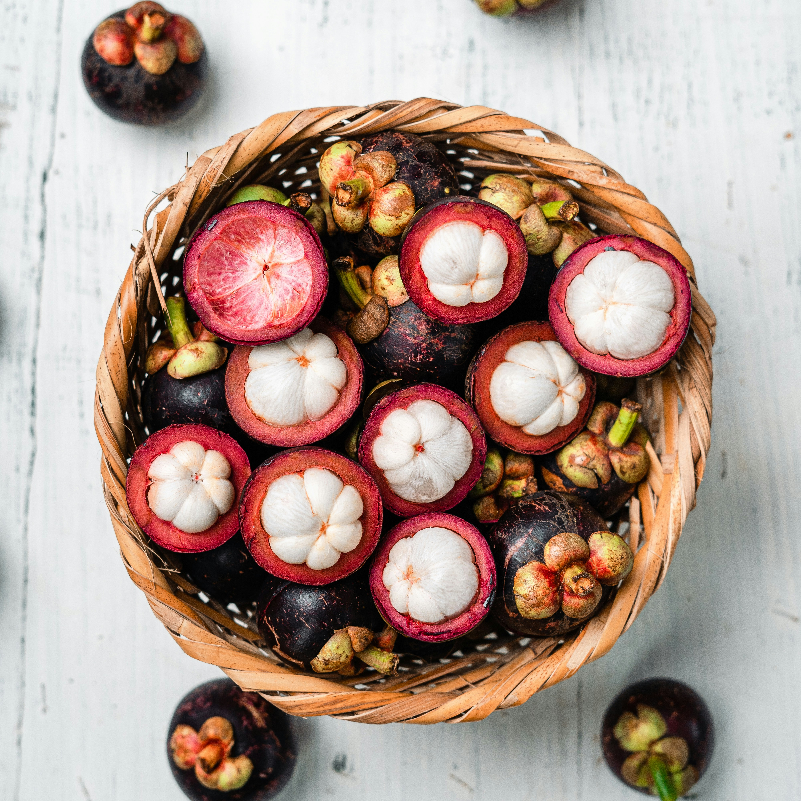
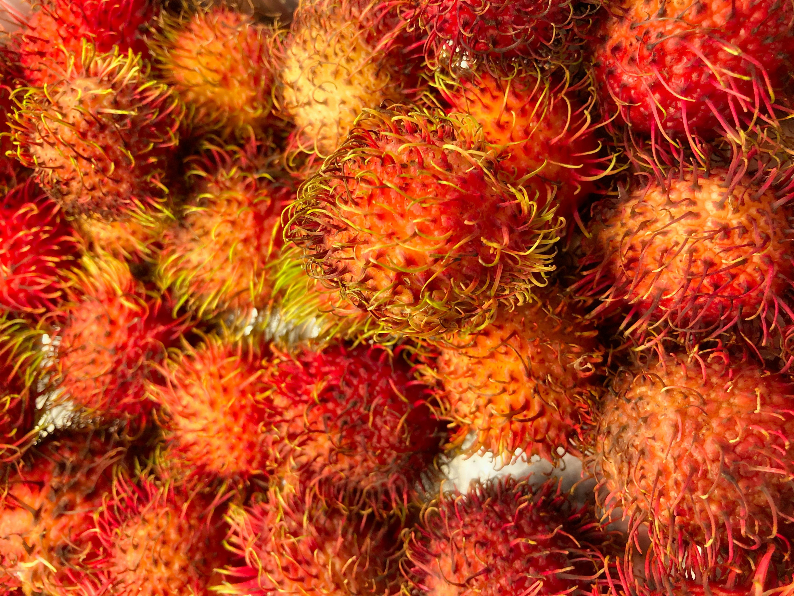
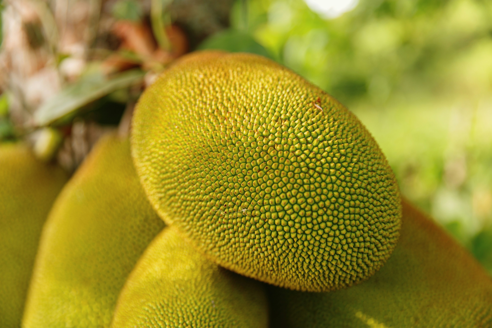
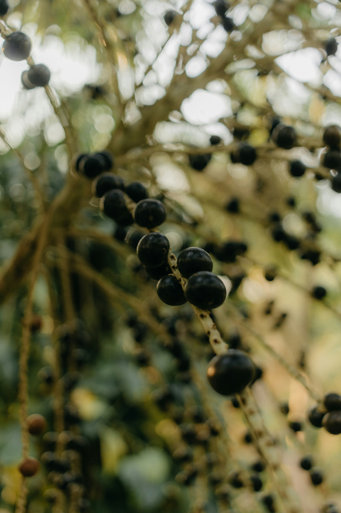
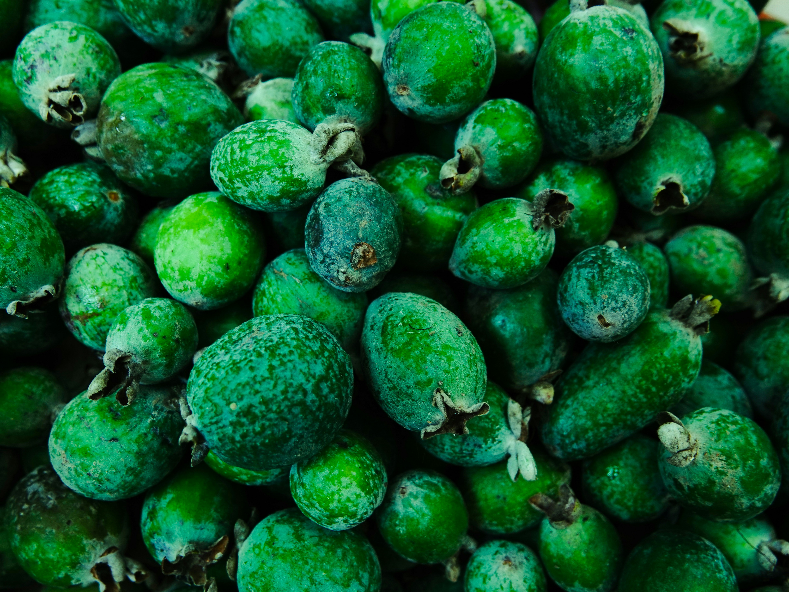
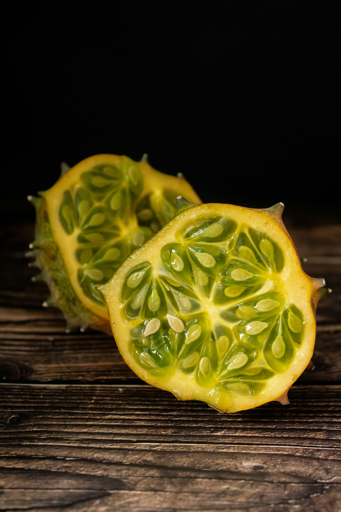
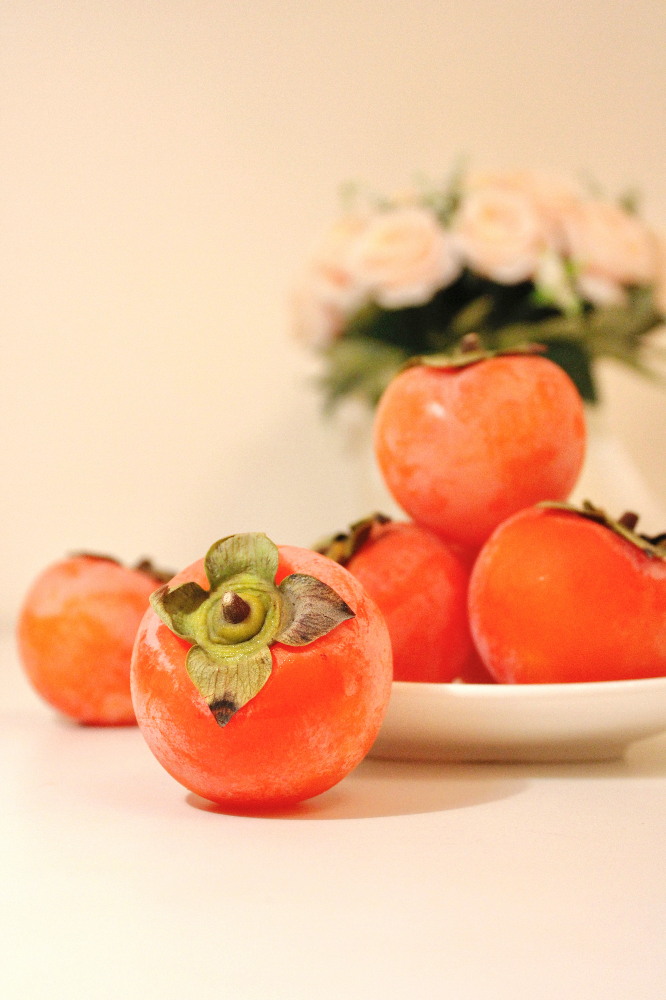
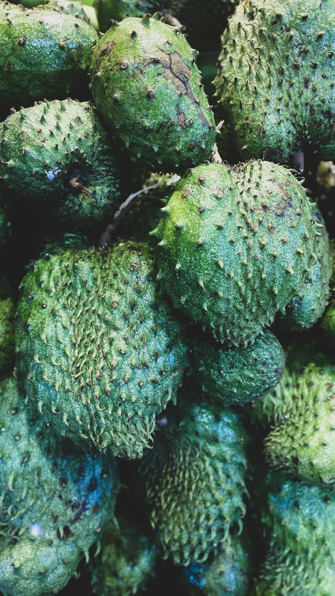
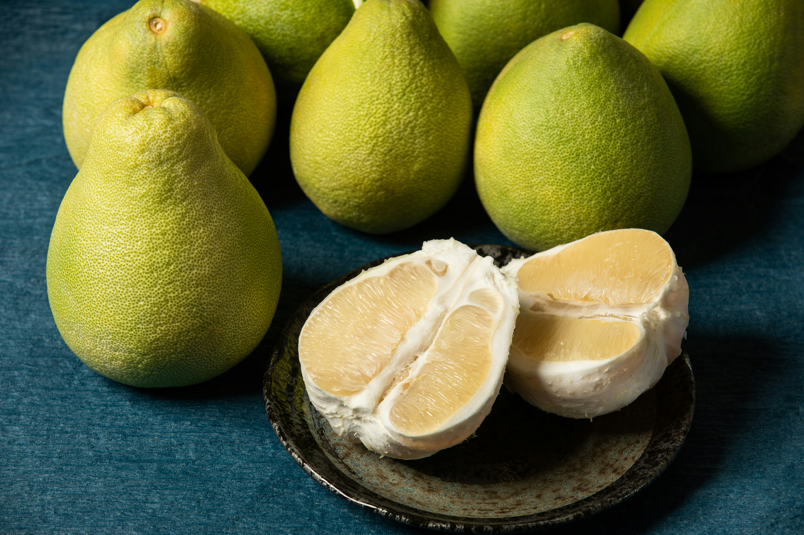
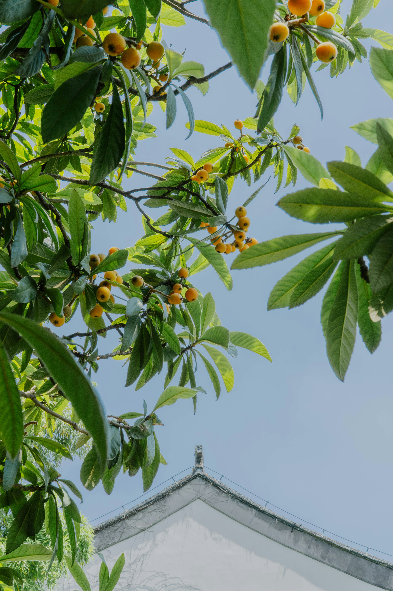

Why fruits matter so much globally
Fruits are among the oldest and most global foods in human history. They vary by climate, geography, and cultural preference, and each region has fruits that define local food traditions, nutrient diversity, and seasonal rhythm.
Featured fruits from different parts of the world
A quick visual tour of some of the best-known fruits that carry a clear regional identity and a strong cultural presence.

The Queen of Fruits
Mangosteen
Rich in xanthones, powerful antioxidants that fight inflammation. Its delicate, snow-white flesh tastes like a blend of strawberry, peach, and vanilla.

Tropical Sweetness
Rambutan
Packed with Vitamin C and copper. Its translucent flesh resembles a lychee but with a creamier, slightly more acidic flavor profile.

The Vegan Meat
Jackfruit
The largest tree-borne fruit in the world. Ripe jackfruit tastes like juicy fruit gum, while unripe jackfruit has a meaty texture perfect for savory vegan dishes.

The Amazonian Superberry
Açaí
Incredibly high in anthocyanins and healthy fats. Unlike most fruits, it's naturally low in sugar and has an earthy, dark chocolate-meets-blackberry flavor.

The Pineapple Guava
Feijoa
A powerhouse of Vitamin C and dietary fiber. It offers a unique, perfume-like flavor combining pineapple, apple, and mint.

The Horned Melon
Kiwano
High in magnesium and zinc. Its jelly-like green interior tastes like a mix of cucumber, zucchini, and kiwi. Highly hydrating.

The Divine Fruit
Persimmon
Rich in Vitamin A and manganese. The Hachiya variety must be eaten jelly-soft, while Fuyu can be eaten crisp like an apple. Tastes of honey and cinnamon.

The Tropical Healer
Soursop
Contains acetogenins, studied for their health properties. Its creamy, fibrous flesh tastes like a combination of strawberry and pineapple with sour citrus notes.

Southeast Asia
Pummelo
Pummelo is one of the largest citrus fruits and is closely tied to Chinese and Southeast Asian fruit culture. Its thick peel and sweet, juicy flesh make it truly memorable.

East Asia
Loquat
Loquat is appreciated in China, Japan, and parts of the Mediterranean for its peach-like shape, golden skin, and sweet, fragrant taste.
What makes fruits so region-specific?
Climate, soil, rainfall, elevation, and traditional farming all shape which fruits a region can grow well. That is why a fruit can be a symbol of place, culture, and seasonal identity all at once.
How to choose, store, and enjoy more fruit.
Seasonality, variety, and simple preparation can make fruit a more practical part of everyday meals.
Feijoa
The Pineapple Guava
A powerhouse of Vitamin C and dietary fiber. It offers a unique, perfume-like flavor combining pineapple, apple, and mint.
Kiwano
The Horned Melon
High in magnesium and zinc. Its jelly-like green interior tastes like a mix of cucumber, zucchini, and kiwi. Highly hydrating.
Persimmon
The Divine Fruit
Rich in Vitamin A and manganese. The Hachiya variety must be eaten jelly-soft, while Fuyu can be eaten crisp like an apple. Tastes of honey and cinnamon.